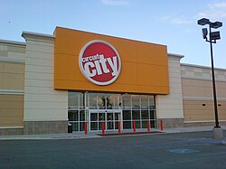

Circuit City
1949 – 2009
Circuit City was a major American electronics retailer — a cathedral of cathode-ray tubes, car stereos, and salespeople who knew exactly where the extended warranty brochures were. At its peak it had over 700 stores and was the kind of place where a teenager could spend four hours deciding between two televisions priced $12 apart.
It was founded in 1949 in Richmond, Virginia, back when "consumer electronics" meant a new radio and "big box retail" meant a very large radio. By the 1990s it was a genuine American institution — a place to go before the internet, when you had to drive somewhere to be confused about specifications in person.
Circuit City made several legendarily bad business decisions in its final years, most famously firing 3,400 of its most experienced (i.e., highest-paid) employees in 2007 to replace them with cheaper workers. This is the corporate equivalent of deciding to save money on your car by removing the steering wheel. Best Buy said thank you and continued operating.
We lost Circuit City in 2009. The parking lots are mostly other things now — mattress stores, urgent care clinics, the usual American commercial afterlife. But somewhere in the foggy nostalgia of a generation lies the memory of fluorescent-lit aisles, DIVX (the bad one, not DivX), and a sales associate named Doug who really believed in the Bose Wave Radio.
Rest in peace, Circuit City. You weren't perfect. But you were ours.
"Where service is state of the art." — Circuit City, until it wasn't